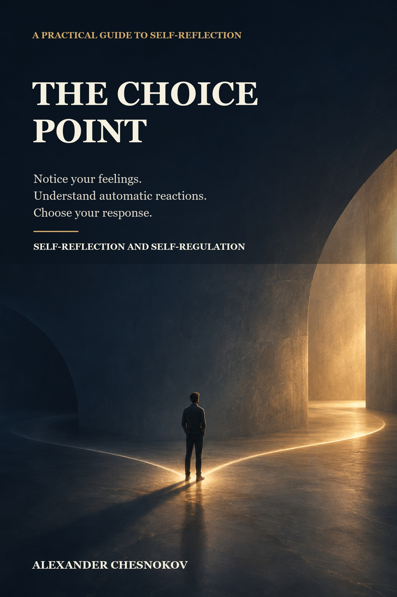

The Choice Point
A practical guide to noticing your feelings, understanding automatic reactions, and choosing your response.

Download The Choice Point as a PDFWho this book is for
For people who understand a great deal about themselves but still agree, justify themselves, take over other people's work, or act against their own wishes in tense conversations.
What you will learn
- separate an event from your interpretation of it;
- notice thoughts and bodily reactions;
- recognize fear, resentment, guilt, shame, sadness, boredom, loneliness, and anger;
- identify suppression, denial, substitution, and projection;
- practice self-reflection and self-regulation in everyday life.
About the author
Alexander Chesnokov is a psychologist and entrepreneur. He combines familiar real-life situations, observation of inner reactions, and practical exercises.